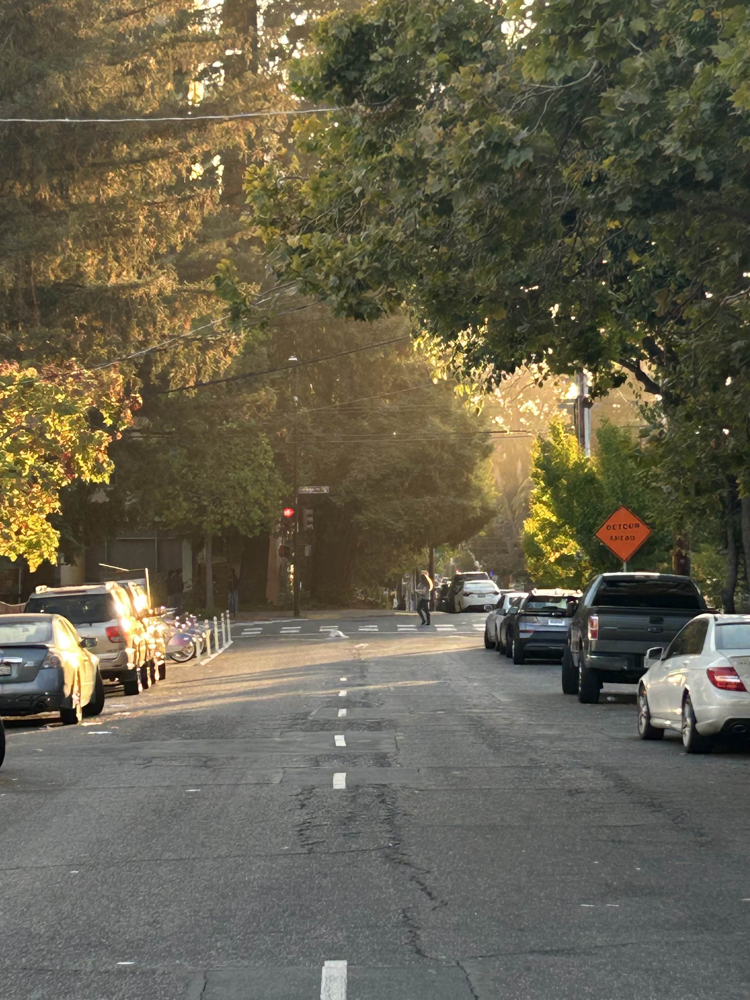
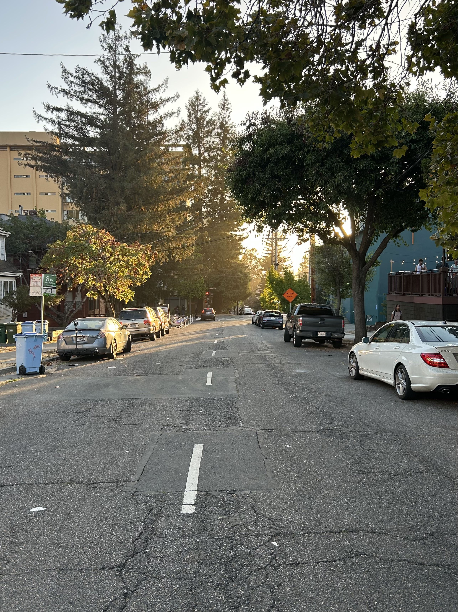

Part 1: Selfie: The Wrong Way vs. The Right Way
Take a picture of your friend (or yourself) from close up. You get a typical distorted selfie image. Now step back several feet from your subject, zoom in, and take a second picture. Try to get the face in the second photo to be the same size as in the first photo. If you've done things right, the second portrait should look much better than the first one.
Close-up Portrait
Zoomed Portrait
Part 2: Architectural Perspective Compression
Let's repeat the same procedure in reverse, for an urban scene. Pick a nice view down a long street (or a walking path on campus), zoom in, and take a photo. Now, walk down the street in the direction of your first shot, and take a second photo without zoom, such that the scene in the two photos appears approximately the same size. The first picture should look flattened, or compressed, compared to the second.
Compressed Perspective
Natural Perspective
Part 3: The Dolly Zoom
The idea is to simultaneously move the camera back while also zooming in. First, come up with a good setting for the shot (e.g., a scene with stuffed animals is one popular choice). Now take a few (4-8 or even more!) still photos while you move the camera back and zoom in, keeping the resulting image roughly the same size. Combine your stills into an animated GIF file—you have a dolly zoom!
Your Dolly Zoom GIF